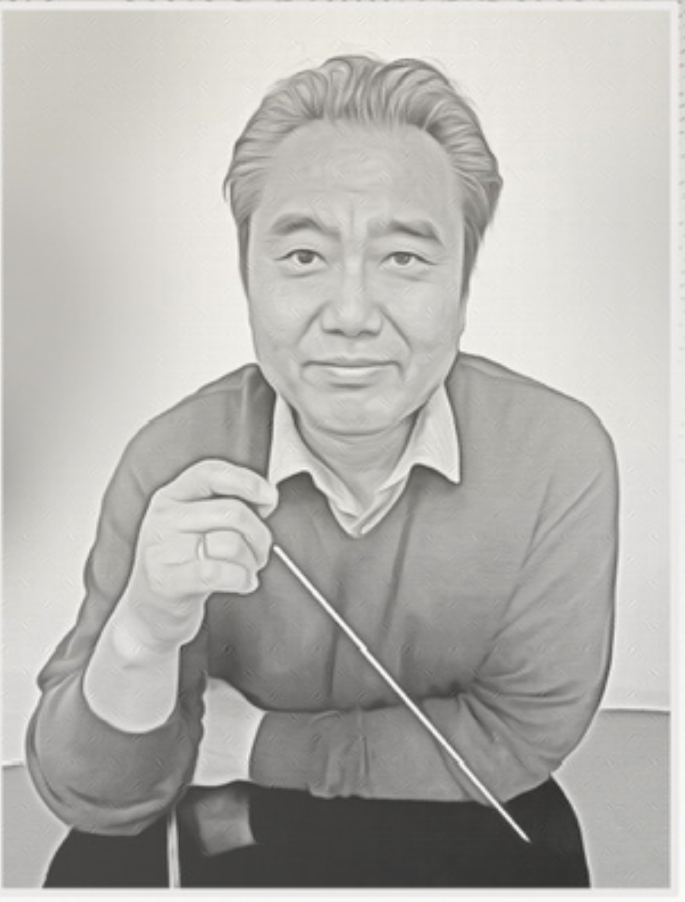

Our Mission
VirtuoSi Chamber Music orchestra is a youth music ensemble based in Orange County, California whose mission is to serve communities through the joy of music. We believe that music has the power to heal and enrich lives. Music is a shared experience that connects us all, across every border and background, across every age and season of our lives.

Orchestra leader, Dr. Um
VirtuoSi Chamber Orchestra is open to students
from seventh to twelfth grades, by audition, and
is led by Dr. Jiyoung Um. With over 30 years of
music education experience, Dr. Um hold both a
bachelor and master degree in music from The
Juilliard School and Doctorate from Columbia
University’s Teacher College.
VirtuoSi’s mission is to enrich both the lives of its students and the communities they serve. Through the study and performance of classical and popular music, with solo and leadership opportunities for its students, VirtuoSi is focused on fostering creativity and connection among its members. Each season culminates in a benefit concert to raise awareness and funds for a partner charitable organization. VirtuoSi members also earn volunteer hours towards The President’s Volunteer Service Awards.
VirtuoSi’s mission is to enrich both the lives of its students and the communities they serve. Through the study and performance of classical and popular music, with solo and leadership opportunities for its students, VirtuoSi is focused on fostering creativity and connection among its members. Each season culminates in a benefit concert to raise awareness and funds for a partner charitable organization. VirtuoSi members also earn volunteer hours towards The President’s Volunteer Service Awards.